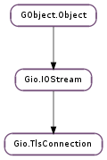

| emit_accept_certificate(peer_cert, errors) | |
| get_certificate() | |
| get_database() | |
| get_interaction() | |
| get_peer_certificate() | |
| get_peer_certificate_errors() | |
| get_rehandshake_mode() | |
| get_require_close_notify() | |
| get_use_system_certdb() | |
| handshake(cancellable) | |
| handshake_async(io_priority, cancellable, callback, *user_data) | |
| handshake_finish(result) | |
| set_certificate(certificate) | |
| set_database(database) | |
| set_interaction(interaction) | |
| set_rehandshake_mode(mode) | |
| set_require_close_notify(require_close_notify) | |
| set_use_system_certdb(use_system_certdb) |
| Name | Type | Flags | Description |
|---|---|---|---|
| base-io-stream | Gio.IOStream | r/w/c | The Gio.IOStream that the connection wraps |
| certificate | Gio.TlsCertificate | r/w | The connection’s certificate |
| database | Gio.TlsDatabase | r/w | Certificate database to use for looking up or verifying certificates |
| interaction | Gio.TlsInteraction | r/w | Optional object for user interaction |
| peer-certificate | Gio.TlsCertificate | r | The connection’s peer’s certificate |
| peer-certificate-errors | Gio.TlsCertificateFlags | r | Errors found with the peer’s certificate |
| rehandshake-mode | Gio.TlsRehandshakeMode | r/w | When to allow rehandshaking |
| require-close-notify | bool | r/w | Whether to require proper TLS close notification |
| use-system-certdb | bool | r/w | Whether to verify peer certificates against the system certificate database |
| Name | Parameters | Return | Description |
|---|---|---|---|
| accept-certificate | Gio.TlsCertificate, Gio.TlsCertificateFlags | bool | Emitted during the TLS handshake after the peer certificate has been received. You can examine peer_cert ‘s certification path by calling Gio.TlsCertificate.get_issuer () on it. For a client-side connection, peer_cert is the server’s certificate, and the signal will only be emitted if the certificate was not acceptable according to conn ‘s Gio.TlsClientConnection :validation-flags. If you would like the certificate to be accepted despite errors, return True from the signal handler. Otherwise, if no handler accepts the certificate, the handshake will fail with Gio.TlsError.BAD_CERTIFICATE. For a server-side connection, peer_cert is the certificate presented by the client, if this was requested via the server’s Gio.TlsServerConnection :authentication-mode. On the server side, the signal is always emitted when the client presents a certificate, and the certificate will only be accepted if a handler returns True. Note that if this signal is emitted as part of asynchronous I/O in the main thread, then you should not attempt to interact with the user before returning from the signal handler. If you want to let the user decide whether or not to accept the certificate, you would have to return False from the signal handler on the first attempt, and then after the connection attempt returns a Gio.TlsError.HANDSHAKE, you can interact with the user, and if the user decides to accept the certificate, remember that fact, create a new connection, and return True from the signal handler the next time. If you are doing I/O in another thread, you do not need to worry about this, and can simply block in the signal handler until the UI thread returns an answer. |
| Name | Type | Access |
|---|---|---|
| parent_instance | Gio.IOStream | r |
Bases: Gio.IOStream
Gio.TlsConnection is the base TLS connection class type, which wraps a Gio.IOStream and provides TLS encryption on top of it. Its subclasses, Gio.TlsClientConnection and Gio.TlsServerConnection, implement client-side and server-side TLS, respectively.
| Parameters: |
|
|---|---|
| Returns: | True if one of the signal handlers has returned True to accept peer_cert |
| Return type: |
Used by Gio.TlsConnection implementations to emit the Gio.TlsConnection ::accept-certificate signal.
| Returns: | conn ‘s certificate, or None |
|---|---|
| Return type: | Gio.TlsCertificate |
Gets conn ‘s certificate, as set by Gio.TlsConnection.set_certificate ().
| Returns: | the certificate database that conn uses or None |
|---|---|
| Return type: | Gio.TlsDatabase |
Gets the certificate database that conn uses to verify peer certificates. See Gio.TlsConnection.set_database ().
| Returns: | The interaction object. |
|---|---|
| Return type: | Gio.TlsInteraction |
Get the object that will be used to interact with the user. It will be used for things like prompting the user for passwords. If None is returned, then no user interaction will occur for this connection.
| Returns: | conn ‘s peer’s certificate, or None |
|---|---|
| Return type: | Gio.TlsCertificate |
Gets conn ‘s peer’s certificate after the handshake has completed. (It is not set during the emission of Gio.TlsConnection ::accept-certificate.)
| Returns: | conn ‘s peer’s certificate errors |
|---|---|
| Return type: | Gio.TlsCertificateFlags |
Gets the errors associated with validating conn ‘s peer’s certificate, after the handshake has completed. (It is not set during the emission of Gio.TlsConnection ::accept-certificate.)
| Returns: | conn ‘s rehandshaking mode |
|---|---|
| Return type: | Gio.TlsRehandshakeMode |
Gets conn rehandshaking mode. See Gio.TlsConnection.set_rehandshake_mode () for details.
| Returns: | True if conn requires a proper TLS close notification. |
|---|---|
| Return type: | bool |
Tests whether or not conn expects a proper TLS close notification when the connection is closed. See Gio.TlsConnection.set_require_close_notify () for details.
| Returns: | whether conn uses the system certificate database |
|---|---|
| Return type: | bool |
Gets whether conn uses the system certificate database to verify peer certificates. See Gio.TlsConnection.set_use_system_certdb ().
| Parameters: | cancellable (Gio.Cancellable or None) – a Gio.Cancellable, or None |
|---|---|
| Raises: | GLib.GError |
| Returns: | success or failure |
| Return type: | bool |
Attempts a TLS handshake on conn.
On the client side, it is never necessary to call this method; although the connection needs to perform a handshake after connecting (or after sending a “STARTTLS”-type command) and may need to rehandshake later if the server requests it, Gio.TlsConnection will handle this for you automatically when you try to send or receive data on the connection. However, you can call Gio.TlsConnection.handshake () manually if you want to know for sure whether the initial handshake succeeded or failed (as opposed to just immediately trying to write to conn ‘s output stream, in which case if it fails, it may not be possible to tell if it failed before or after completing the handshake).
Likewise, on the server side, although a handshake is necessary at the beginning of the communication, you do not need to call this function explicitly unless you want clearer error reporting. However, you may call Gio.TlsConnection.handshake () later on to renegotiate parameters (encryption methods, etc) with the client.
Gio.TlsConnection ::accept-certificate may be emitted during the handshake.
| Parameters: |
|
|---|
Asynchronously performs a TLS handshake on conn. See Gio.TlsConnection.handshake () for more information.
| Parameters: | result (Gio.AsyncResult) – a Gio.AsyncResult. |
|---|---|
| Raises: | GLib.GError |
| Returns: | True on success, False on failure, in which case error will be set. |
| Return type: | bool |
Finish an asynchronous TLS handshake operation. See Gio.TlsConnection.handshake () for more information.
| Parameters: | certificate (Gio.TlsCertificate) – the certificate to use for conn |
|---|
This sets the certificate that conn will present to its peer during the TLS handshake. For a Gio.TlsServerConnection, it is mandatory to set this, and that will normally be done at construct time.
For a Gio.TlsClientConnection, this is optional. If a handshake fails with Gio.TlsError.CERTIFICATE_REQUIRED, that means that the server requires a certificate, and if you try connecting again, you should call this method first. You can call Gio.TlsClientConnection.get_accepted_cas () on the failed connection to get a list of Certificate Authorities that the server will accept certificates from.
(It is also possible that a server will allow the connection with or without a certificate; in that case, if you don’t provide a certificate, you can tell that the server requested one by the fact that Gio.TlsClientConnection.get_accepted_cas () will return non-None.)
| Parameters: | database (Gio.TlsDatabase) – a Gio.TlsDatabase |
|---|
Sets the certificate database that is used to verify peer certificates. This is set to the default database by default. See Gio.TlsBackend.get_default_database (). If set to None, then peer certificate validation will always set the Gio.TlsCertificateFlags.UNKNOWN_CA error (meaning Gio.TlsConnection ::accept-certificate will always be emitted on client-side connections, unless that bit is not set in Gio.TlsClientConnection :validation-flags ).
| Parameters: | interaction (Gio.TlsInteraction or None) – an interaction object, or None |
|---|
Set the object that will be used to interact with the user. It will be used for things like prompting the user for passwords.
The interaction argument will normally be a derived subclass of Gio.TlsInteraction. None can also be provided if no user interaction should occur for this connection.
| Parameters: | mode (Gio.TlsRehandshakeMode) – the rehandshaking mode |
|---|
Sets how conn behaves with respect to rehandshaking requests.
Gio.TlsRehandshakeMode.NEVER means that it will never agree to rehandshake after the initial handshake is complete. (For a client, this means it will refuse rehandshake requests from the server, and for a server, this means it will close the connection with an error if the client attempts to rehandshake.)
Gio.TlsRehandshakeMode.SAFELY means that the connection will allow a rehandshake only if the other end of the connection supports the TLS renegotiation_info extension. This is the default behavior, but means that rehandshaking will not work against older implementations that do not support that extension.
Gio.TlsRehandshakeMode.UNSAFELY means that the connection will allow rehandshaking even without the renegotiation_info extension. On the server side in particular, this is not recommended, since it leaves the server open to certain attacks. However, this mode is necessary if you need to allow renegotiation with older client software.
| Parameters: | require_close_notify (bool) – whether or not to require close notification |
|---|
Sets whether or not conn expects a proper TLS close notification before the connection is closed. If this is True (the default), then conn will expect to receive a TLS close notification from its peer before the connection is closed, and will return a Gio.TlsError.EOF error if the connection is closed without proper notification (since this may indicate a network error, or man-in-the-middle attack).
In some protocols, the application will know whether or not the connection was closed cleanly based on application-level data (because the application-level data includes a length field, or is somehow self-delimiting); in this case, the close notify is redundant and sometimes omitted. (TLS 1.1 explicitly allows this; in TLS 1.0 it is technically an error, but often done anyway.) You can use Gio.TlsConnection.set_require_close_notify () to tell conn to allow an “unannounced” connection close, in which case the close will show up as a 0-length read, as in a non-TLS Gio.SocketConnection, and it is up to the application to check that the data has been fully received.
Note that this only affects the behavior when the peer closes the connection; when the application calls Gio.IOStream.close () itself on conn, this will send a close notification regardless of the setting of this property. If you explicitly want to do an unclean close, you can close conn ‘s Gio.TlsConnection :base-io-stream rather than closing conn itself.
| Parameters: | use_system_certdb (bool) – whether to use the system certificate database |
|---|
Sets whether conn uses the system certificate database to verify peer certificates. This is True by default. If set to False, then peer certificate validation will always set the Gio.TlsCertificateFlags.UNKNOWN_CA error (meaning Gio.TlsConnection ::accept-certificate will always be emitted on client-side connections, unless that bit is not set in Gio.TlsClientConnection :validation-flags ).